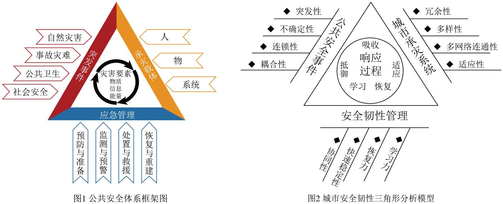

练习 · 非连续文本阅读
安全韧性城市
区分灾害风险、城市韧性与多主体治理，并检验图示对治理关系的表达。
导读
文体与题材：城市治理研究论文（摘编）；安全韧性城市建构与极端天气应对。
作者简介：范维澄，中国工程院院士，清华大学教授，研究领域包括火灾科学、公共安全风险评估与应急管理。
文本出处：
内容脉络：材料先界定安全韧性城市，借分析模型说明其功能与建设框架，再扩展到智慧城市的相关要求。随后针对极端天气提出建设问题，依次讨论风险评估、设施改造及动态预警，使概念阐释落实为应对风险的路径。
内容主旨：材料主张通过风险研判、基础设施、监测预警与多主体协同提升城市应对冲击及恢复的能力。
阅读重点：区分风险、韧性和治理措施，核对图示结构与文字论证是否一致。
原文
原文按结构分节；随文内容可定位至对应段落。
概念界定：安全韧性城市能够抵御风险、维持基本功能并在灾后恢复。
批注 1
阅读提示
随着城镇化进程的加快，城市发展面临着越来越多的不确定性因概念界定：安全韧性城市的内涵与功能。阅读时应区分该部分的事实陈述、解释关系与评价词。
模型建构：公共安全事件、承灾系统与韧性管理构成分析城市风险的框架。
安全韧性城市是指在逆变环境中具备耐受、适应和迅速恢复能力的城市，其构建的理论基础是公共安全体系（图1）。基于公共安全体系理论，结合安全韧性城市的承受、适应、恢复等关键特征，可提炼公共安全事件、城市承灾系统、安全韧性管理三个维度构成“城市安全韧性三角形分析模型”（图2），进而延伸出构建安全韧性城市的研究框架，其包含风险识别、状态评估、规划响应、策略制定四个方面内容。在风险识别中对影响城市系统的公共安全事件风险进行判断，通过分析实现对风险的识别和预警；随后对城市受灾系统的脆弱性和韧性程度进行状态评估，测度城市面临的风险和各种不确定性因素的类型、强度、范围和空间分布；再通过规划响应在安全韧性管理中突出强调应急能力评估、业务可持续性和韧性资源的合理分配，编制出面向不确定性事件的规划，最后制定出可以提高城市韧性的策略，实现安全韧性城市在公共安全事件前后“抵御―吸收―适应―恢复―学习”的响应流程闭环。
图1公共安全体系：突发事件包括自然灾害、事故灾难、公共卫生和社会安全事件；承灾载体为人、物、系统；应急管理包括预防与准备、监测与预警、处置与救援、恢复与重建。图2城市安全韧性三角形分析模型：城市承灾系统包括冗余性、多样性、多网络连通性、适应性；安全韧性管理包括协同性、快速稳定性、恢复力、学习力；中央响应过程为抵御、吸收、适应、恢复、学习。
札记 1
阅读提示
安全韧性城市是指在逆变环境中具备耐受、适应和迅速恢复能力“耐受、适应和迅速恢复能力”界定韧性，公共安全体系提供理论框架。本项把定义与功能连起来说明，没有把韧性误写成完全消除一切风险。
技术拓展：物联网、大数据等技术用于感知风险和支持韧性城市管理。
在数字技术快速发展背景下，融合新兴科技手段的“智慧安全韧性城市”理念值得被进一步推广。“智慧安全韧性城市”运用先进的公共安全管理理念，充分利用物联网、大数据、云计算、人工智能等新兴技术，开展城市的全方位物联网监测、评估与精细化管理，提升城市对各类公共安全事件的治理能力，编织全方位、立体化的城市公共安全网，保障城市安全发展。
——摘编自范维澄《以安全韧性城市建设推进公共安全治理现代化》
材料二
注释 1
阅读提示
在数字技术快速发展背景下，融合新兴科技手段的“智慧安全韧“物联网、大数据、云计算、人工智能”等手段用于强化公共安全治理。智慧化是增强信息感知与响应的途径，本项转述这一方向，不应扩张为技术必能解决所有治理问题。
材料二起笔：极端天气风险增加，推动城市提高应对灾害的能力。
批注 1
阅读提示
随着全球气候变暖，包括极端高温、极端暴雨、极端干旱等各种“城市固有的热岛效应和密集效应”是既有背景条件，会加重极端天气的影响。本项改为极端天气“带来”这些效应，颠倒了原文说明的因果位置。
建设路径：城市以风险数据评估和设施改造加强抵御极端天气的基础。
城市政府依靠扎实有效的数据分析、风险排查、调查研究、综合评估，做到对极端天气知己知彼，是提高城市韧性应对极端天气的首要基础。城市政府要着眼于历史、现在、未来，对数百年以来自己城市发生过的高温、干旱、暴雨、台风等异常或极端天气的历史信息进行大数据分析，并将它曾发生的频度、强度等数据落在城市地理空间上，科学分析、总结归纳和系统掌握城市极端天气或异常气候发生演变的时空规律，对城市可能发生的极端天气类型、可能造成的各项损失，以及应对过程中薄弱的环节，做出准确的风险评估，针对最有可能发生的极端天气、最可能受损的地理单元和社会群体，制定最高效的物资储备方案和应急预案等各类治理方案，提高城市建筑、生命线工程系统、灾害防御工程等城市基础设施的防灾安全性能，增强城市应对极端天气的“硬实力”。大中城市政府一方面要优化布局城市绿地、公园和生态环境系统，全方位打造亲自然的绿色经济体系，加大维护城市生物多样性，从根源上减少污染、脱碳化、减轻城市热岛效应。另一方面，高度重视“气候融资”建设，加大城市各类道路桥梁隧道、老旧建筑物、老旧小区、地下管网等生命线设施的更新改造，在建筑物和基础设施中使用抗风、抗洪、抗旱、抗震等技术，提高硬件设施的本质安全水平。同时，综合利用遥感、人工智能、数字信息技术等，加大城市数字动态感知体系的布局和建构，平时就要及时感知、掌握重大设施可能存在的风险隐患，确保在遭受极端天气灾害袭击时保持“铜墙铁壁”。
札记 1
阅读提示
城市政府依靠扎实有效的数据分析、风险排查、调查研究、综合“首要基础”把数据分析、风险排查、调查研究与综合评估置于方案制定之前。先认识具体风险再制定措施，与文中“因地制宜、因灾制宜”的要求相连。
建设路径：动态监测与精准预警为城市应对极端天气提供技术支持。
科技支撑、动态监测、精准预报、及时预警，是应对各种极端天气灾害的不二法门。有效防范极端高温、极端严寒、特大暴雨等，离不开“高精尖”的灾害信息数据分析和动态模拟以及预警预报。城市政府要利用信息通信技术提高城市的应变性和应急响应能力，如利用物联网和人工智能技术收集和分析气象数据，实时动态监测和预测，及时预警预报极端天气。这些系统可以通过短信、电子邮件、社交媒体和广播电视等渠道将警报信息全面传递给市民，让市民第一时间获得可能发生极端天气灾害的关键信息，为企事业单位和民众个体的防灾应急决策提供数据支撑。
——摘编自陶希东《建设韧性城市：应对极端气候的重要策略》
注释 1
阅读提示
科技支撑、动态监测、精准预报、及时预警，是应对各种极端天此处在全篇中的功能是：监测预警：科技支撑、动态监测、及时预警。相关概念须结合上下文限定理解。

第1题 · 内容理解
下列对材料相关内容的理解和分析，不正确的一项是（）
A．安全韧性城市以公共安全体系为理论基础，具备承受、适应、恢复的能力，能有效应对城市发展过程中遇到的“天灾”和“人祸”。
B．“智慧安全韧性城市”利用新兴数字技术强化城市韧性，使公共安全网络覆盖整个城市，对各类公共安全事件具有更强的治理能力。
C．极端天气可能引发一系列灾害风险，带来热岛效应和密集效应，使城市受到威胁和影响，建设韧性城市是应对极端天气的重要策略。
D．提高城市韧性以应对极端天气，城市政府首先要进行有效的数据分析、风险排查、调查研究、综合评估，制定各类高效的治理方案。
参考答案1展开 / 收起
参考作答
C
审题与考查点
信息理解转述题，C项“带来热岛效应和密集效应”为归因错误，属曲解文意。
文本分析
以下按判断、证据与推理逐项分析。选项标题和证据引文均可定位并高亮相应语句。
A项查看证据 ↗
“耐受、适应和迅速恢复能力”界定韧性，公共安全体系提供理论框架。本项把定义与功能连起来说明，没有把韧性误写成完全消除一切风险。
B项查看证据 ↗
“物联网、大数据、云计算、人工智能”等手段用于强化公共安全治理。智慧化是增强信息感知与响应的途径，本项转述这一方向，不应扩张为技术必能解决所有治理问题。
C项查看证据 ↗
“城市固有的热岛效应和密集效应”是既有背景条件，会加重极端天气的影响。本项改为极端天气“带来”这些效应，颠倒了原文说明的因果位置。
D项查看证据 ↗
“首要基础”把数据分析、风险排查、调查研究与综合评估置于方案制定之前。先认识具体风险再制定措施，与文中“因地制宜、因灾制宜”的要求相连。
知识点
将判断对象、适用条件与结论范围分别说明，再以具体词句验证解释；概念名称不能代替推导。
解题方法
拆分选项中的对象、事实关系及限定，回文定位证据，再检验结论是否可由证据推出。与原文不同措辞不自动构成错误。
易误辨析
术语只能概括已经证明的问题，不能代替逐项推理。区分相对不够贴切、缺乏证据与直接违背文本三种判断。
答案组织与检核
明确选择后，按选项分别写出关键证据、适用概念与推论。比较题说明相对优势；有条件的结论保留限定，不为排除选项而添加原文没有的绝对规则。
第2题 · 分析评价
根据材料内容，下列说法不正确的一项是（）
A．同样论述韧性城市建设，材料一指向公共安全事件，材料二则聚焦极端天气，前者涉及范围更广。
B．文中借“随后”“再”“最后”等词，将风险识别、状态评估、规划响应、策略制定组织成相互承接的研究步骤。
C．建设韧性城市，城市政府要考虑自己城市和所受灾害的独特性，制定符合城市实际情况的方案。
D．优化布局城市绿地、公园和生态环境系统能解决根源问题，其重要性高于“气候融资”建设。
参考答案2展开 / 收起
参考作答
D
审题与考查点
基于材料的推断辨析题，D项“重要性高于”属比较失当，于文无据。
文本分析
以下按判断、证据与推理逐项分析。选项标题和证据引文均可定位并高亮相应语句。
A项查看证据 ↗
公共安全事件包括多种自然与社会风险，极端天气属于其中一类。依两文实际议题比较，材料一的对象范围更广，材料二的分析更为聚焦。
B项查看证据 ↗
“随后”“再”“最后”标示文中介绍框架的次序：先识别，再评估，继而响应与策略。本项只概括本段顺序，不把它扩大为现实治理中永不可反馈调整的法则。
C项查看证据 ↗
“因地制宜、因灾制宜”要求把城市和灾害的特点纳入治理方案。普遍框架必须与具体风险相接，本项据此推出有差别的措施，属于有依据的迁移。
D项查看证据 ↗
“一方面”“另一方面”并列提出生态布局与融资建设，没有比较二者的总体重要性。即使某措施作用于风险成因，也不能自动推出其在所有治理任务中优先于其他措施。
知识点
将判断对象、适用条件与结论范围分别说明，再以具体词句验证解释；概念名称不能代替推导。
解题方法
拆分选项中的对象、事实关系及限定，回文定位证据，再检验结论是否可由证据推出。与原文不同措辞不自动构成错误。
易误辨析
术语只能概括已经证明的问题，不能代替逐项推理。区分相对不够贴切、缺乏证据与直接违背文本三种判断。
答案组织与检核
明确选择后，按选项分别写出关键证据、适用概念与推论。比较题说明相对优势；有条件的结论保留限定，不为排除选项而添加原文没有的绝对规则。
第3题 · 概念辨析
下列选项，不属于建设“韧性城市”做法的一项是（）
A．上海电信通过“千兆光网＋5G专网、超大流量套餐”等品质网络与优质服务入驻校园，赋能大学智慧校园建设，为高校学生们带来各种新奇丰富的体验。
B．伦敦于2021年发布伦敦风险登记册，通过背景分析、灾害识别和定位评估、风险分析、风险应对方法、监测和回顾等步骤对伦敦的主要风险进行评估和识别。
C．北京加快构建由气象卫星与测雨雷达、雨量站、水文站共同组成的雨情水情监测预报三道防线，以及水文水动力学模型组成的预报、预警、预演、预案“四预”智慧化防洪指挥调度体系。
D．纽约政府制定新的建筑韧性设计指南，对全市5个行政区的老建筑进行加固系统、抬高房屋、置换空间、异地搬迁等多方式改造，同时提高新建建筑的防洪标准和防风韧性。
参考答案3展开 / 收起
参考作答
A
审题与考查点
概念外延判断题——依据“韧性城市”的内涵判据，逐项归类，挑出外延之外者。
文本分析
以下按判断、证据与推理逐项分析。选项标题和证据引文均可定位并高亮相应语句。
A项查看证据 ↗
“新奇丰富的体验”指向校园网络的使用体验，选项没有说明防灾、承受冲击或恢复的用途。因此仅凭所述信息，尚不能把它归入本题所界定的城市韧性建设。
B项查看证据 ↗
风险登记册的“灾害识别”“风险分析”与材料所说风险识别、评估相对应。其工作对象明确是风险及应对，属于韧性建设的认识和规划环节。
C项查看证据 ↗
雨情水情监测及“四预”体系对应“监测”“预警”和应急响应。信息技术在这里直接服务于防洪，与单纯增加网络消费体验有不同的任务指向。
D项查看证据 ↗
建筑加固和提高防洪防风标准直接改变承灾设施的能力；搬迁等措施调整暴露程度。这些做法与“耐受、适应”要求相合，不以技术是否新颖作为判据。
知识点
内涵是概念所规定的属性，外延是符合这些规定的对象范围。概念外延可有全同、包含、交叉或全异关系。内涵增加、外延缩小的对应只在同一论域和属性累加等条件下成立，不是任意两个概念都具有的反比公式。
解题方法
明确论域和各概念的判定条件，再判断对象集合之间是否包含、交叉或互斥。画图后应逐条回查定义，而不能让图形替代定义。
易误辨析
术语只能概括已经证明的问题，不能代替逐项推理。区分相对不够贴切、缺乏证据与直接违背文本三种判断。
答案组织与检核
明确选择后，按选项分别写出关键证据、适用概念与推论。比较题说明相对优势；有条件的结论保留限定，不为排除选项而添加原文没有的绝对规则。
第4题 · 图文理解
下列对材料一中图1和图2的理解和分析，不正确的一项是（）
A．自然灾害、事故灾难、公共卫生和社会安全等突发事件可能给人、物或系统带来灾害性破坏。
B．应急管理有多种人为干预手段，在灾害发生和发展的不同阶段发挥作用，减轻灾害的影响和危害。
C．城市承灾系统是在“承灾载体”基础上提炼出来的，体现了安全韧性城市适应、恢复的关键特征。
D．图2中央以“抵御—吸收—适应—恢复—学习”呈现安全韧性城市响应公共安全事件的过程闭环。
参考答案4展开 / 收起
参考作答
C
审题与考查点
图文互证题，须以图1“公共安全体系”、图2“城市安全韧性三角形分析模型”的图示信息为准，核验选项转述。
文本分析
以下按判断、证据与推理逐项分析。选项标题和证据引文均可定位并高亮相应语句。
A项查看证据 ↗
图1把四类突发事件与人、物、系统这些承灾载体关联，表现风险作用对象。图示关系与题项转述相符，不能将承灾对象误当成事件类型。
B项查看证据 ↗
图1列“预防与准备”“监测与预警”“处置与救援”“恢复与重建”，对应不同阶段的人为干预。它强调全过程管理，不是只有灾后救援。
C项查看证据 ↗
图2的城市承灾系统列出冗余性、多样性、多网络连通性和适应性；“恢复力”列于安全韧性管理。本项把不同维度的特征合并归给同一要素，属于图示分类误读。
D项查看证据 ↗
图2中央圆环组织“抵御—吸收—适应—恢复—学习”，与正文“响应流程闭环”的说明对应。这里说这些环节合成全过程，并非每个环节在每个时刻同时发生。
知识点
图表把数量、结构或空间关系转化为视觉形式，图像赏析则结合可见细节讨论表现方式。两类任务均须先准确描述可见信息，再作解释，不能用主题推测代替观察。
解题方法
辨认标题、图例、坐标、层级或主体，记录可直接观察的关系；结合配文解释这些关系，并检验图文是否同一口径。艺术图像应明确构图、线条和对象之间的联系。
易误辨析
术语只能概括已经证明的问题，不能代替逐项推理。区分相对不够贴切、缺乏证据与直接违背文本三种判断。
答案组织与检核
明确选择后，按选项分别写出关键证据、适用概念与推论。比较题说明相对优势；有条件的结论保留限定，不为排除选项而添加原文没有的绝对规则。
第5题 · 要点概括
数字技术在应对极端天气的韧性城市建设中有哪些方面的作用？请结合材料二加以概括。
参考答案5展开 / 收起
参考作答
利用大数据分析历史气象信息，掌握极端天气演变的时空规律，做出准确的风险评估。
利用遥感、人工智能等技术建构城市数字动态感知体系，及时感知重大设施风险隐患，增强城市应对极端天气的“硬实力”。
利用物联网、人工智能等技术对灾害进行动态监测、精准预报、及时预警，提高城市的应变性和应急响应能力。
利用多渠道信息系统将警报信息全面传递给市民，为企事业单位和民众的防灾应急决策提供数据支撑。
审题与考查点
限定区间的信息筛选概括题；限定词有三——“数字技术”“应对极端天气”“材料二”，三者共同划定答题边界。
文本分析
证据与推导 1查看证据 ↗
材料二第二段圈得“对……历史信息进行大数据分析……做出准确的风险评估”，转述为要点①；圈得“综合利用遥感、人工智能、数字信息技术等，加大城市数字动态感知体系的布局和建构”，转述为要点②。第三段圈得“利用物联网和人工智能技术收集和分析气象数据，实时动态监测和预测，及时预警预报”，转述为要点③；圈得“通过短信、电子邮件、社交媒体和广播电视等渠道将警报信息全面传递给市民……提供数据支撑”，转述为要点④。
知识点
归纳由若干观察支持更一般的判断，其可靠性与样本范围、代表性、独立性以及反例情况有关。多处同类证据可增强支持，但不能仅凭数量证明结论必然成立。
解题方法
按“方面”设问的概括题，一点对应一类功能；同类信息合并、事例性文字剔除，各点句式宜统一为“手段＋作用”的动宾结构，确保覆盖区间无遗漏。
易误辨析
其一，【方法】越出材料二或漏答信息传递一点，照抄事例不作转述；其二，无视“数字技术”限定，各点角度交叉重复。
答案组织与检核
其二，各点统一为“手段＋作用”动宾结构：大数据评估、遥感感知、物联网预警、多渠道传递（概括四步法）。
作者与版本资料
清华大学：范维澄，院士资料。
参考文献
本文关联
文本证据与阅读推论3 处
阅读条目 →知识点 ↗相关研习：文本证据与阅读推论、信息转述与判断范围。
知识点 ↗相关研习：文本证据与阅读推论、论证方法。
关联研习 ↗本篇收录于语言运用与信息阅读。依据具体问题，可进一步比较文本证据与阅读推论、信息转述与判断范围、论证方法、概念的内涵与外延、逻辑基本规律、图表与图像阅读、归纳概括与证据强度、主观题的推导与组织。
信息转述与判断范围2 处
阅读条目 →知识点 ↗相关研习：文本证据与阅读推论、信息转述与判断范围。
关联研习 ↗本篇收录于语言运用与信息阅读。依据具体问题，可进一步比较文本证据与阅读推论、信息转述与判断范围、论证方法、概念的内涵与外延、逻辑基本规律、图表与图像阅读、归纳概括与证据强度、主观题的推导与组织。
论证方法2 处
阅读条目 →知识点 ↗相关研习：文本证据与阅读推论、论证方法。
关联研习 ↗本篇收录于语言运用与信息阅读。依据具体问题，可进一步比较文本证据与阅读推论、信息转述与判断范围、论证方法、概念的内涵与外延、逻辑基本规律、图表与图像阅读、归纳概括与证据强度、主观题的推导与组织。
概念的内涵与外延3 处
阅读条目 →知识点 ↗相关研习：概念的内涵与外延、逻辑基本规律。
知识点 ↗相关研习：图表与图像阅读、概念的内涵与外延。
关联研习 ↗本篇收录于语言运用与信息阅读。依据具体问题，可进一步比较文本证据与阅读推论、信息转述与判断范围、论证方法、概念的内涵与外延、逻辑基本规律、图表与图像阅读、归纳概括与证据强度、主观题的推导与组织。
逻辑基本规律2 处
阅读条目 →知识点 ↗相关研习：概念的内涵与外延、逻辑基本规律。
关联研习 ↗本篇收录于语言运用与信息阅读。依据具体问题，可进一步比较文本证据与阅读推论、信息转述与判断范围、论证方法、概念的内涵与外延、逻辑基本规律、图表与图像阅读、归纳概括与证据强度、主观题的推导与组织。
图表与图像阅读2 处
阅读条目 →知识点 ↗相关研习：图表与图像阅读、概念的内涵与外延。
关联研习 ↗本篇收录于语言运用与信息阅读。依据具体问题，可进一步比较文本证据与阅读推论、信息转述与判断范围、论证方法、概念的内涵与外延、逻辑基本规律、图表与图像阅读、归纳概括与证据强度、主观题的推导与组织。
归纳概括与证据强度2 处
阅读条目 →知识点 ↗相关研习：归纳概括与证据强度、主观题的推导与组织。
关联研习 ↗本篇收录于语言运用与信息阅读。依据具体问题，可进一步比较文本证据与阅读推论、信息转述与判断范围、论证方法、概念的内涵与外延、逻辑基本规律、图表与图像阅读、归纳概括与证据强度、主观题的推导与组织。
引用本文
逻辑基本规律4 处
阅读条目 →安全韧性城市 · 第3题选析 ↗研习任务：下列选项，不属于建设“韧性城市”做法的一项是（） A．上海电信通过“千兆光网＋5G专网、超大流量套餐”等品质网络与优质服务入驻校园，赋能大学智慧校园建设，为高校学生们带来各种新奇丰富的体验。 B．伦敦于2021年发布伦敦风险登记册，通过背景分析、灾害识别和定位评估、风险分析、风险…
安全韧性城市 · 第3题选析 ↗文本依据：“新奇丰富的体验”；“耐受、适应和迅速恢复能力”。
安全韧性城市 · 第3题选析 ↗文本依据：“灾害识别”；“风险分析”；“风险识别”。
安全韧性城市 · 第3题选析 ↗查看完整解析与全部证据
图表与图像阅读6 处
阅读条目 →概念界定与边界 ↗假设一张柱状图显示两个年份的调查次数，先读纵轴单位和起点，再比较柱高；若纵轴不从零开始，肉眼所见的差距可能被放大。图画中的大小、位置也可用于表达意义，但不能在未说明比例时直接读作真实数量。图和文字共同提供证据，读者须先弄清它们怎样表示信息；安全韧性城市图像题可练习逐项核对图例与配文。
实例细读 ↗安全韧性城市的图示需区分治理主体、过程和能力；石门颂单字赏析则要指出笔画收放、疏密和重心，才能解释平正与险奇如何并存。
安全韧性城市 · 第4题选析 ↗研习任务：下列对材料一中图1和图2的理解和分析，不正确的一项是（） A．自然灾害、事故灾难、公共卫生和社会安全等突发事件可能给人、物或系统带来灾害性破坏。 B．应急管理有多种人为干预手段，在灾害发生和发展的不同阶段发挥作用，减轻灾害的影响和危害。 C．城市承灾系统是在“承灾载体”基础上提炼…
安全韧性城市 · 第4题选析 ↗文本依据：“突发事件包括自然灾害、事故灾难、公共卫生和社会安全事件”；“承灾载体为人、物、系统”。
安全韧性城市 · 第4题选析 ↗文本依据：“预防与准备”；“监测与预警”；“处置与救援”；“恢复与重建”。
安全韧性城市 · 第4题选析 ↗查看完整解析与全部证据